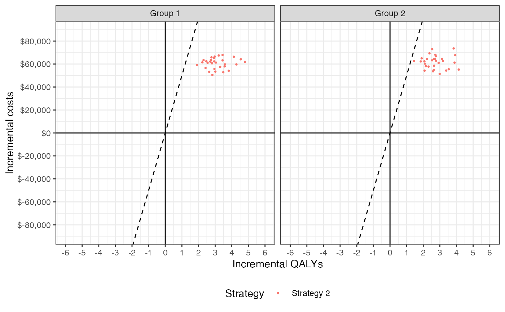
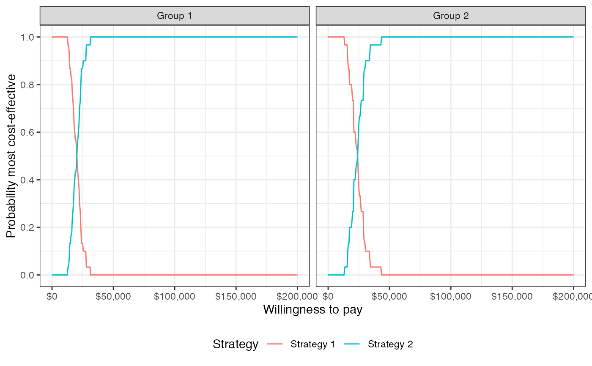
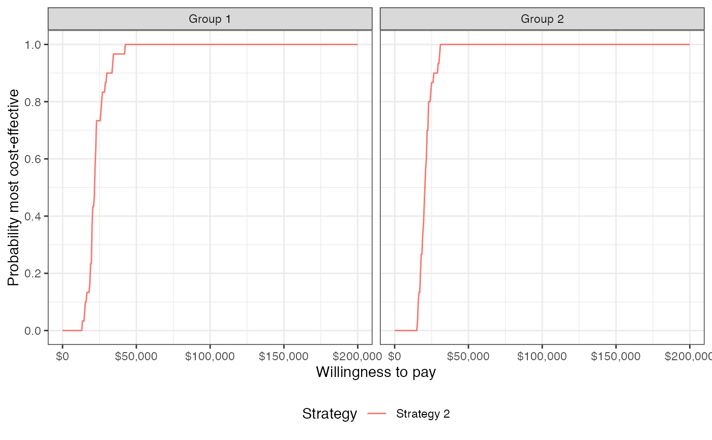
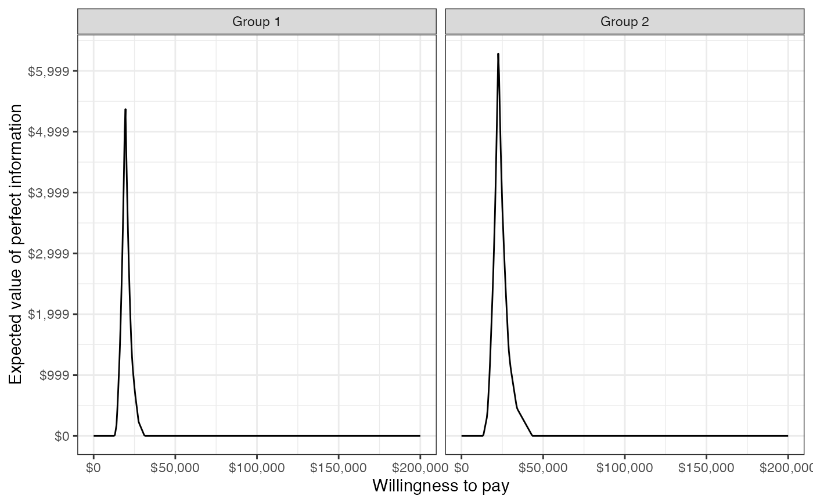
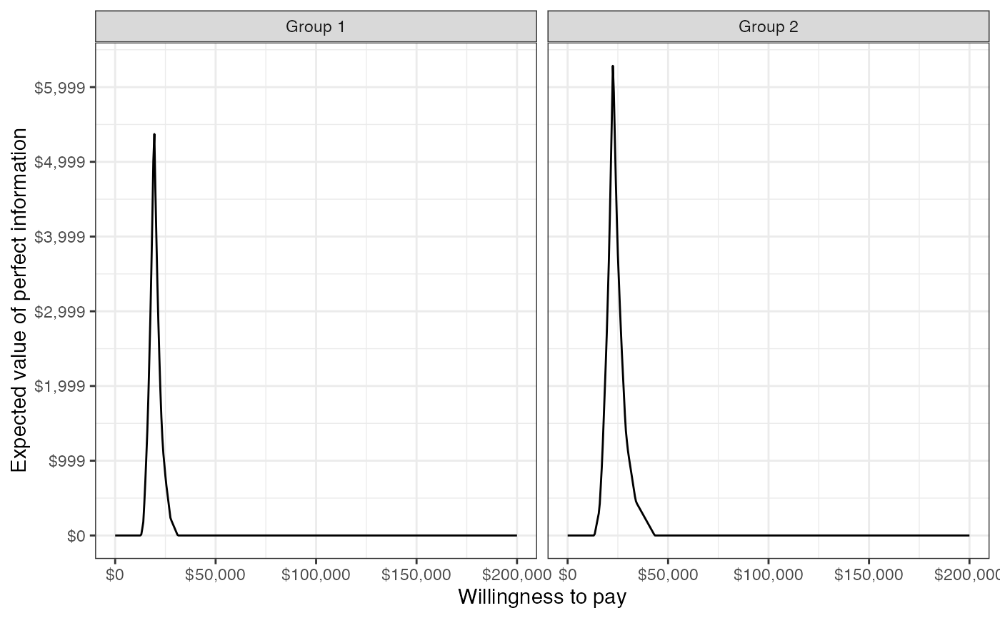

Conduct cost-effectiveness analysis (CEA) given output of an economic model; that is, summarize a probabilistic sensitivity analysis (PSA), possibly by subgroup.
cea()computes the probability that each treatment is most cost-effective, output for a cost-effectiveness acceptability frontier, the expected value of perfect information, and the net monetary benefit for each treatment.cea_pw()conducts pairwise CEA by comparing strategies to a comparator. Computed quantities include the incremental cost-effectiveness ratio, the incremental net monetary benefit, output for a cost-effectiveness plane, and output for a cost-effectiveness acceptability curve.
cea(x, ...)
cea_pw(x, ...)
# S3 method for default
cea(x, k = seq(0, 2e+05, 500), sample, strategy, grp = NULL, e, c, ...)
# S3 method for default
cea_pw(
x,
k = seq(0, 2e+05, 500),
comparator,
sample,
strategy,
grp = NULL,
e,
c,
...
)
# S3 method for ce
cea(x, k = seq(0, 2e+05, 500), dr_qalys, dr_costs, ...)
# S3 method for ce
cea_pw(x, k = seq(0, 2e+05, 500), comparator, dr_qalys, dr_costs, ...)Arguments
- x
An object of simulation output characterizing the probability distribution of clinical effectiveness and costs. If the default method is used, then
xmust be adata.frameordata.tablecontaining columns of mean costs and clinical effectiveness where each row denotes a randomly sampled parameter set and treatment strategy.- ...
Further arguments passed to or from other methods. Currently unused.
- k
Vector of willingness to pay values.
- sample
Character name of column from
xdenoting a randomly sampled parameter set.- strategy
Character name of column from
xdenoting treatment strategy.- grp
Character name of column from
xdenoting subgroup. IfNULL, then it is assumed that there is only one group.- e
Character name of column from
xdenoting clinical effectiveness.- c
Character name of column from
xdenoting costs.- comparator
Name of the comparator strategy in
x.- dr_qalys
Discount rate for quality-adjusted life-years (QALYs).
- dr_costs
Discount rate for costs.
Value
cea() returns a list of four data.table elements.
- summary
A
data.tableof the mean, 2.5% quantile, and 97.5% quantile by strategy and group for clinical effectiveness and costs.- mce
The probability that each strategy is the most effective treatment for each group for the range of specified willingness to pay values. In addition, the column
bestdenotes the optimal strategy (i.e., the strategy with the highest expected net monetary benefit), which can be used to plot the cost-effectiveness acceptability frontier (CEAF).- evpi
The expected value of perfect information (EVPI) by group for the range of specified willingness to pay values. The EVPI is computed by subtracting the expected net monetary benefit given current information (i.e., the strategy with the highest expected net monetary benefit) from the expected net monetary benefit given perfect information.
- nmb
The mean, 2.5% quantile, and 97.5% quantile of net monetary benefits for the range of specified willingness to pay values.
cea_pw also returns a list of four data.table elements:
- summary
A data.table of the mean, 2.5% quantile, and 97.5% quantile by strategy and group for incremental clinical effectiveness and costs.
- delta
Incremental effectiveness and incremental cost for each simulated parameter set by strategy and group. Can be used to plot a cost-effectiveness plane.
- ceac
Values needed to plot a cost-effectiveness acceptability curve by group. The CEAC plots the probability that each strategy is more cost-effective than the comparator for the specified willingness to pay values.
- inmb
The mean, 2.5% quantile, and 97.5% quantile of incremental net monetary benefits for the range of specified willingness to pay values.
Examples
library("data.table")
library("ggplot2")
theme_set(theme_bw())
# Simulation output
n_samples <- 30
sim <- data.table(sample = rep(seq(n_samples), 4),
c = c(rlnorm(n_samples, 5, .1), rlnorm(n_samples, 5, .1),
rlnorm(n_samples, 11, .1), rlnorm(n_samples, 11, .1)),
e = c(rnorm(n_samples, 8, .2), rnorm(n_samples, 8.5, .1),
rnorm(n_samples, 11, .6), rnorm(n_samples, 11.5, .6)),
strategy_id = rep(1:2, each = n_samples * 2),
grp_id = rep(rep(1:2, each = n_samples), 2)
)
# Cost-effectiveness analysis
cea_out <- cea(sim, k = seq(0, 200000, 500), sample = "sample",
strategy = "strategy_id", grp = "grp_id",
e = "e", c = "c")
names(cea_out)
#> [1] "summary" "mce" "evpi" "nmb"
## Some sample output
## The probability that each strategy is the most cost-effective
## in each group with a willingness to pay of 20,000
cea_out$mce[k == 20000]
#> k strategy_id grp_id best prob
#> 1: 20000 1 1 0 0.5333333
#> 2: 20000 2 1 1 0.4666667
#> 3: 20000 1 2 1 0.7333333
#> 4: 20000 2 2 0 0.2666667
# Pairwise cost-effectiveness analysis
cea_pw_out <- cea_pw(sim, k = seq(0, 200000, 500), comparator = 1,
sample = "sample", strategy = "strategy_id",
grp = "grp_id", e = "e", c = "c")
names(cea_pw_out)
#> [1] "summary" "delta" "ceac" "inmb"
## Some sample output
## The cost-effectiveness acceptability curve
head(cea_pw_out$ceac[k >= 20000])
#> k strategy_id grp_id prob
#> 1: 20000 2 1 0.4666667
#> 2: 20000 2 2 0.2666667
#> 3: 20500 2 1 0.5333333
#> 4: 20500 2 2 0.2666667
#> 5: 21000 2 1 0.5666667
#> 6: 21000 2 2 0.4000000
# Summarize the incremental cost-effectiveness ratio
labs <- list(strategy_id = c("Strategy 1" = 1, "Strategy 2" = 2),
grp_id = c("Group 1" = 1, "Group 2" = 2))
format(icer(cea_pw_out, labels = labs))
#> Group Outcome Strategy 2
#> 1: Group 1 Incremental QALYs 3.13 (2.14, 4.61)
#> 2: Group 1 Incremental costs 60,590 (52,259, 67,593)
#> 3: Group 1 Incremental NMB 95,883 (46,261, 167,036)
#> 4: Group 1 ICER 19,361
#> 5: Group 2 Incremental QALYs 2.73 (1.74, 3.98)
#> 6: Group 2 Incremental costs 61,783 (53,030, 73,175)
#> 7: Group 2 Incremental NMB 74,908 (24,545, 138,061)
#> 8: Group 2 ICER 22,599
# Plots
plot_ceplane(cea_pw_out, label = labs)

plot_ceac(cea_out, label = labs)

plot_ceac(cea_pw_out, label = labs)

plot_ceaf(cea_out, label = labs)
 plot_evpi(cea_out, label = labs)

plot_evpi(cea_out, label = labs)
